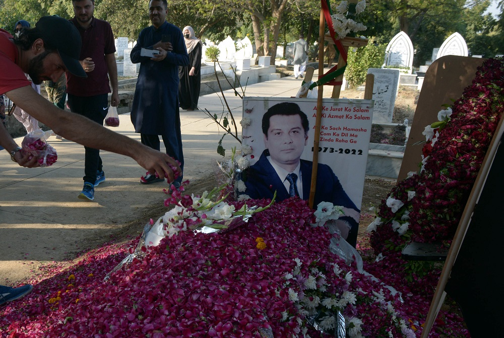

Arshad Sharif: Mystery over killing of Pakistani journalist in Kenya
The shooting dead of a prominent Pakistani investigative journalist by police in Kenya caused outrage in his home country, leaving many wondering how such a thing could have happened.
Thousands turned up to Arshad Sharif's funeral on Thursday in Islamabad to mourn the well-known critic of Pakistan's military.
Opponents of the current Pakistani government believe that he was targeted in a plot organised in Pakistan.
But Kenya's police, in an initial report, said the 49-year-old was shot dead in a moving vehicle in a case of mistaken identity.
Pakistan says it has sent investigators to Kenya to help with the inquiry into what took place.
